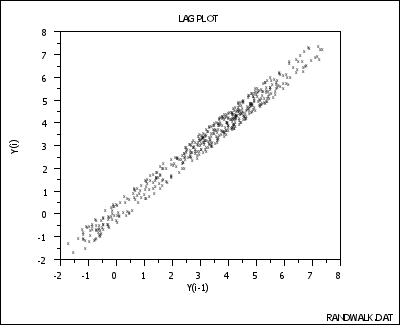

|
1. Exploratory Data Analysis 1.3. EDA Techniques 1.3.3. Graphical Techniques: Alphabetic 1.3.3.11. Lag Plot 1.3.3.11.3. Lag Plot: Strong Autocorrelation and Autoregressive Model |
|
| Lag Plot |
 |
| Conclusions |
1. Underlying autoregressive model 2. No outliers |
| Discussion |
Note the tight clustering of points
along the diagonal--this is the lag plot signature of
a process with strong positive autocorrelation.
Such processes are highly non-random--there is high associativiy between
an observation and a succeeding observation; in short, if you know Y(i-1),
you can make a strong guess as to what Y(i) will be.
If the above process were completely random (see the "Random" example), the plot would have a shotgun pattern, and knowledge of a current observation (say Y(i-1) = 3) would yield virtually no knowledge about the next observation Y(i) (it could here be anywhere from -2 to +8). On the other hand, if the process had strong autocorrelation as actually above, and if Y(i-1) = 3, then the range of possible values for Y(i) is seen to be restricted to a smaller range (2 to 4)--still wide but an improvement nonetheless (relative to -2 to +8) in predictive power. |
|
Recommended Next Step |
1. Determine the parameters for the autoregressive model:
2. Reexamine the system to arrive at an explanation for the strong
|